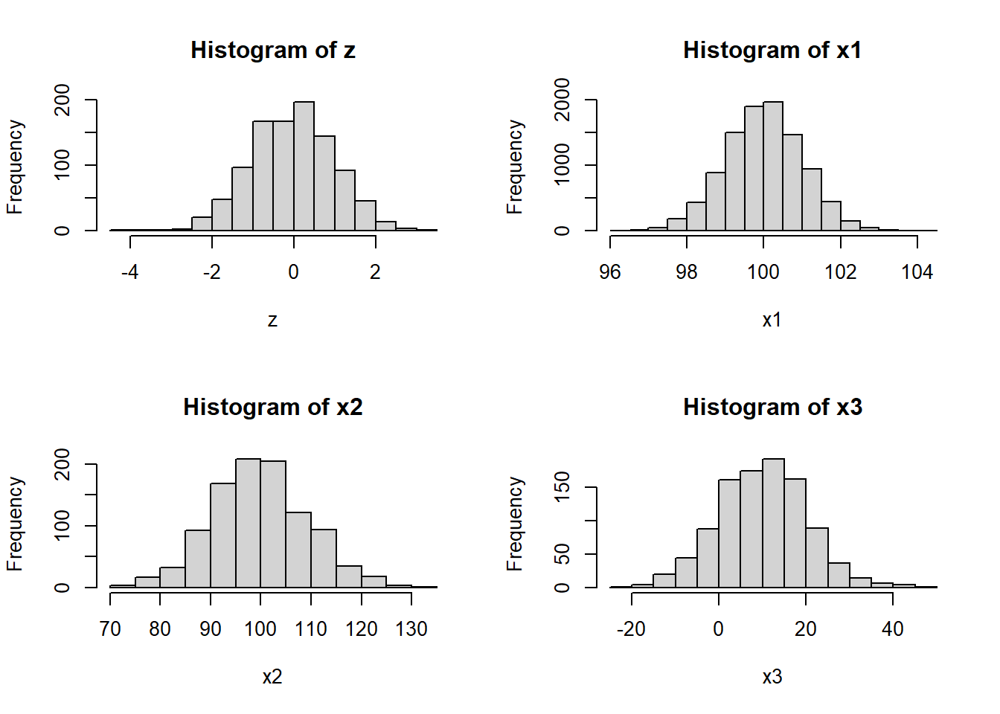

# Função dbinom() para calcular a probabilidade em uma distribuição binomial
probabilidade <- dbinom(x=4, size = 10, prob = 0.5)
print(probabilidade)[1] 0.2050781Para cada distribuição de probabilidade existem quatro funções no R. Cada uma delas é chamada adicionando o seguinte prefixo ao nome da distribuição correspondente:
- d - para a função de massa ou densidade.
- p - para a função de distribuição (cumulativa).
- q - para quantis, ou seja, para calcular o valor correspondente para a função de distribuição cumulativa dada uma probabilidade.
- r-para gerar amostras aleatórias com a distribuição dada.
| Discrete Distribution Name | Continuous Distribution Name |
|---|---|
| Binomial (binom) | Normal (norm) |
| Negative binomial (nbinom) | Exponential (exp) |
| Geometric (geom) | Uniform (unif) |
| Poisson (pois) | Gama (gamma) |
# Função dbinom() para calcular a probabilidade em uma distribuição binomial
probabilidade <- dbinom(x=4, size = 10, prob = 0.5)
print(probabilidade)[1] 0.2050781probabilidade <- pbinom(q=4, size = 10, prob = 0.5)
print(probabilidade)[1] 0.3769531N = 20
n = 1
(x = rbinom(N,n,prob = 0.5)) [1] 1 1 0 0 0 1 1 0 1 0 0 0 1 1 0 1 0 0 0 0(table(x))x
0 1
12 8 # Função dpois() para calcular a probabilidade em uma distribuição de Poisson
probabilidade <- dpois(3, lambda = 2)
print(probabilidade)[1] 0.180447probabilidade <- ppois(3, lambda = 2)
print(probabilidade)[1] 0.8571235x <- rpois(n = 10, lambda = 2)
table(x)x
0 1 2 3 4 6
3 1 2 1 2 1 é a variável aleatória,
é a média da distribuição,
é o desvio padrão da distribuição.
Suponha que estamos analisando os resultados de um teste padronizado em que a pontuação média é 100 e o desvio padrão é 15. Queremos calcular a probabilidade de um aluno ter uma pontuação abaixo de 110.
# Função pnorm() para calcular a probabilidade em uma distribuição normal
probabilidade <- pnorm(110, mean = 100, sd = 15)
print(probabilidade)[1] 0.7475075probabilidade <- pnorm(120, mean = 100, sd = 15) - pnorm(110, mean = 100, sd = 15)
print(probabilidade)[1] 0.1612813probabilidade <- pnorm(120, mean = 100, sd = 15,lower.tail = F)
print(probabilidade) # ou[1] 0.09121122probabilidade <- 1-pnorm(120, mean = 100, sd = 15,lower.tail = T)
print(probabilidade)[1] 0.09121122qnorm(0.75,mean = 100,15)[1] 110.1173qnorm(0.09,mean = 100,15,lower.tail = F)[1] 120.1113z = rnorm(1000,mean = 0,sd = 1)
x1 = rnorm(10000,mean = 100,sd = 1)
x2 = rnorm(1000,mean = 100,sd = 10)
x3 = rnorm(1000,mean = 10,sd = 10)
par(mfrow=c(2,2))
hist(z);hist(x1);hist(x2);hist(x3)
# Parâmetros da distribuição normal
mu <- 0 # Média
sigma <- 1 # Desvio padrão
# Valores para o eixo x
x <- seq(-4, 4, length.out = 100)
# Calculando os valores da densidade de probabilidade para os valores de x
y <- dnorm(x, mean = mu, sd = sigma)
# Plotando a curva da distribuição normal
plot(x, y, type = "l", lwd = 2, col = "blue",
main = "Curva da Distribuição Normal",
xlab = "x", ylab = "Densidade de Probabilidade")
Pesquisar sobre as distribuições: exponencial e uniforme:
Elabore exemplos de uso dessas distribuições usando as funções em R apresentadas no exemplo da Normal
Calcule propbabilidades
Gere dessas distribuições para diferentes parâmetros
A tabela abaixo mostra uma simulação de controle de estoque para 15 dias. Construa uma função para simular o controle de estoque. Considere:
Estoque máximo: 200
Estoque no dia 1 é o estoque máximo
Demanda Poisson
Sejam e o estoque do dia seguinte.
O estoque do dia seguinte será preenchido considerando:
rpois(n=1,lambda=50). Depois calcule a probabilidade de a demanda ser maior que o estoque final do dia 1 usando 1-ppois(Estoque final,50). Utilize a regra 5 para fazer os incrementos dos estoques diários